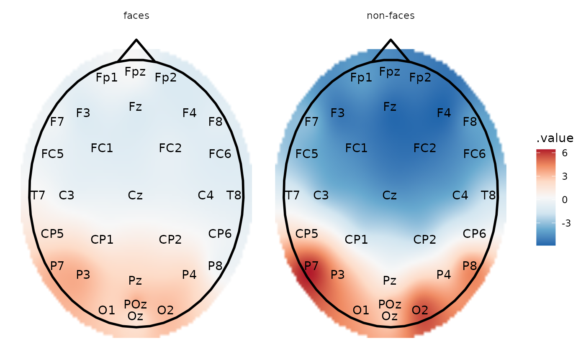

,
plot_topo initializes a ggplot object which takes an eeg_lst object as its input data. Layers can then be added in the same way as for a ggplot2::ggplot object.
plot_topo(data, ...)
# S3 method for tbl_df
plot_topo(data, .value = .value, .label = .key, ...)
# S3 method for eeg_lst
plot_topo(data, .projection = "polar", ...)A table of interpolated electrodes as produced by eeg_interpolate_tbl, or an eeg_lst, or ica_lst appropiately grouped.
If data are an eeg_lst or ica_lst, these are arguments passed to eeg_interpolate_tbl, such as, radius, size, etc.
Values used for the interpolation, generally .value (default).
Label of the points that are used for the interpolation, generally .key (default).
.Projection type for converting the 3D coordinates of the electrodes into 2d coordinates. .Projection types available: "polar" (default), "orthographic", or "stereographic"
A ggplot object
Before calling plot_topo, the eeg_lst object object must be appropriately grouped (e.g. by condition) and/or summarized into mean values such that each .x .y coordinate has only one amplitude value. By default, plot_topo interpolates amplitude values via eeg_interpolate_tbl, which generates a tibble with .key (channel), .value (amplitude), and .x .y coordinate variables. .x .y coordinates are extracted from the eeg_lst object, which in turn reads the coordinates logged by your EEG recording software. By default, plot_topo will display electrodes in polar arrangement, but can be changed with the projection argument. Alternatively, if eeg_interpolate_tbl is called after grouping/summarizing but before plot_topo, the resulting electrode layout will be stereographic.
plot_topo called alone without any further layers will create a non-annotated topographical plot. To add a head and nose, add the layer annotate_head. Add contour lines with ggplot2::geom_contour and electrode labels with ggplot2::geom_text. These arguments are deliberately not built into the function so as to allow flexibility in choosing color, font size, and even head size, etc.
To add additional components to the plot such as titles and annotations, simply
use the + symbol and add layers exactly as you would for ggplot2::ggplot.
Other plotting functions:
annotate_electrodes(),
annotate_events(),
annotate_head(),
eeg_downsample(),
ggplot.eeg_lst(),
plot.eeg_lst(),
plot_components(),
plot_in_layout(),
theme_eeguana()
Other topographic plots and layouts:
layout_32_1020,
plot_components(),
plot_in_layout()
library(dplyr)
library(ggplot2)
# Calculate mean amplitude between 100-200 ms and plot the topography
data_faces_ERPs %>%
# select the time window of interest
eeg_filter(between(as_time(.sample, .unit = "milliseconds"), 100, 200)) %>%
# compute mean amplitude per condition
eeg_group_by(condition) %>%
eeg_summarize(across_ch(mean, na.rm = TRUE)) %>%
plot_topo() +
# add a head and nose shape
annotate_head() +
# add electrode labels
annotate_electrodes(color = "black") +
facet_grid(~condition)
# The same but with interpolation
data_faces_ERPs %>%
eeg_filter(between(as_time(.sample, .unit = "milliseconds"), 100, 200)) %>%
eeg_group_by(condition) %>%
eeg_summarize(across_ch(mean, na.rm = TRUE)) %>%
eeg_interpolate_tbl() %>%
plot_topo() +
annotate_head() +
annotate_electrodes(color = "black") +
facet_grid(~condition)
